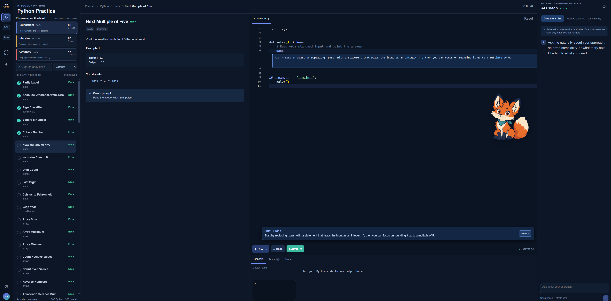

01
710 curated coding exercises
Work through 410 Python, 150 Java, and 150 SQL drills across Easy, Medium, and Hard levels.
Practise Python, Java, SQL, and machine-learning interview concepts in one focused Windows workspace. KitCode combines a curated exercise bank, local code execution, progress tracking, reviewed answers, and optional live coaching from Codex—without requiring a Git or terminal workflow.
Free download from GitHub · Windows · core practice works offline after setup
KitCode works well for first-time practice, interview preparation, refreshing fundamentals, learning data structures and algorithms, or building confidence before moving into larger projects.

The workspace brings the exercise, editor, runner, feedback, and progress together instead of spreading practice across several tools.
Work through 410 Python, 150 Java, and 150 SQL drills across Easy, Medium, and Hard levels.
Ask questions naturally, request a targeted hint, or get an explanation based on the exercise and current code.
Run code, inspect output, submit against the exercise test suite, and track completed problems.
After a correct submission, compare the approach with an expected solution, Big-O target, and readability-first rubric.
Step through executed lines and inspect changing values when a program is difficult to reason about.
Review 100 questions each for Python, Java, SQL, and machine-learning concepts without opening the code editor.
The curated bank, runner, drafts, and progress stay on the computer and continue to work offline after setup.
The selected level, drafts, solved exercises, FAQ scores, and recent coach conversations are remembered locally.
KitCode can connect to an authenticated Codex CLI and use it as a live programming coach. OpenAI, Anthropic/Claude, and compatible local models are also supported.
| Track | Curated practice | Topics include |
|---|---|---|
| Python | 410 exercises: 176 Easy, 140 Medium, 94 Hard | Typed functions and dataclasses, iterators and generators, async I/O, retries, data structures, classes and OOP, searching, sorting, trees, graphs, dynamic programming, and advanced algorithms. |
| Java | 150 exercises: 35 Easy, 86 Medium, 29 Hard | Core syntax, arrays, strings, collections, maps, stacks, linked lists, binary search, trees, graphs, greedy algorithms, dynamic programming, backtracking, and design. |
| SQL | 150 exercises: 46 Easy, 89 Medium, 15 Hard | Filtering, aggregation, joins, NULL, CASE, subqueries, window functions, recursive CTEs, time-series analysis, gaps and islands, hierarchies, and reachability. |
| Python Fundamentals | 100 optional multiple-choice questions | Typed functions and classes, iterators, async I/O, exceptions, testing, dependency injection, API pagination, rate limiting, and clear abstractions. |
| Java Interview FAQs | 100 optional multiple-choice questions | Java semantics, OOP, exceptions, generics, collections, streams, concurrency, modern Java, testing, and the JVM. |
| SQL Interview FAQs | 100 optional multiple-choice questions | Filtering, joins, aggregation, window functions, CTEs, schema design, indexes, performance, transactions, security, and warehousing. |
| Machine Learning Concepts | 100 optional multiple-choice questions | Regression, gradient descent, preprocessing, regularisation, evaluation, forests and boosting, neural networks, transformer attention, and production ML. |
The interface and exercise runner are packaged into a Windows download, while tagged releases are tested and published through GitHub Actions.
KitCode opens in the browser. The first launch may need a few minutes and an internet connection while it prepares Python and the required packages; later launches are much faster. Java is prepared automatically where the computer permits it.